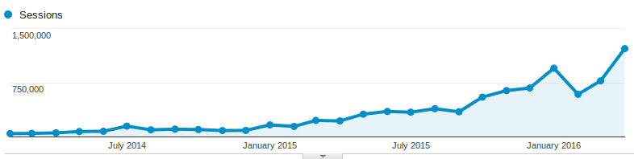
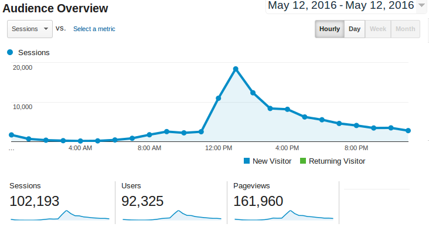
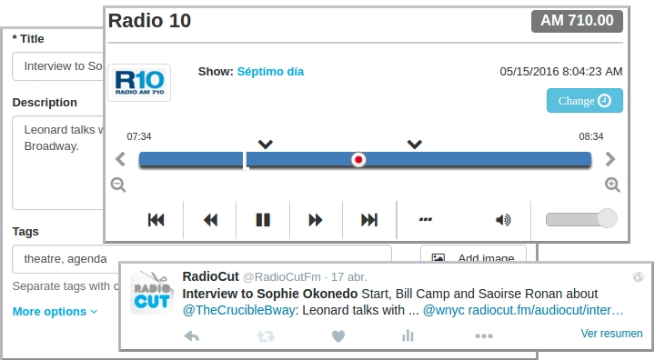
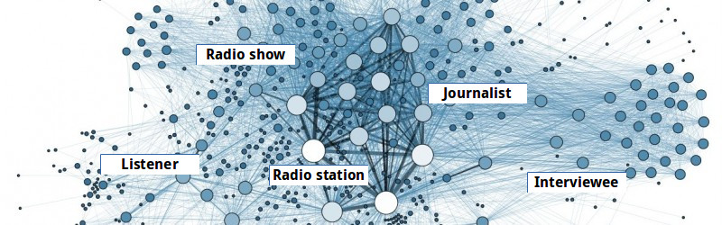
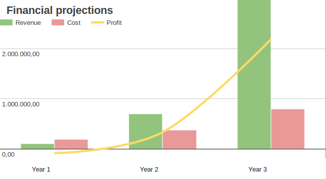

Investor Deck
All the radio to rewind, listen and share
Imagine a Spotify for radio. Imagine giving listeners the power to select their favorite moments and making them viral hits online.
Traction
- 10-15% monthly growth since Feb 2014
- 1.2 Million sessions per month
- 12.000 cuts per month
- #3 th radio web site by Alexa in Argentina
- Industry recognition: Éter Prize
Sharing and virality with Radiocut - A real example
|  |
Market Oportunity
- On demand access
- All in one site
Market Oportunity
Alexa Ranking - Internet users
| Argentina | USA | ||
| #55 cienradios.com |
|
#120 other.com |
|
| #120 cadena3.com | #448 other.com | ||
| #440 radiocut.fm | #448 foxsports.com | ||
| #480 metro951.com | #448 other.com | ||
| #580 rockandpop.com | #448 other.com |
The Problem
People want to listen to radio when ever they want and share it
Current Solutions
Radio stations web sitesHard to admin. Bad UX |
PodcastingDon't have radio content. No real time. |
The Product
RadioCut is a platform where you can listen to past and present radio shows and you can cut & share radio segments you enjoy with your friends.
Revenue Model
Freemium
Revenue = 3 x infrastructure costs
Other revenues
- Private services for media monitoring companies
- Services for radio stations and radio shows.
Current metrics
- 12,8% MoM growth (since Feb 2014)
- 1.2 million monthly sessions / 2.5 M pageviews
- 688 radio stations
- Cuts: 12.000 per month
- Users: 37.000 registered, 6.000 active, 120 premium users: 10 $ p/month
- 3 monitoring service company customers
Marketing and Growth Strategy
- People love that their work is mentioned
- Social networks, yet automated. Focus in radio workers.
- Radio stations need a new distribution channel
- Comunication team
Team
Guillermo Narvaja: CEO, software developer, product manager
Milena Armada: Software developer, customer support champion
|
Experience in long term projects. Technical and business skills |

Impetus to start another project completely different and innovator |
Competition
| Radio directory | Radio content | Live | Upload needed | Crowdsourcing | |
| soundcloud.com | No | Partial | No | Yes | Yes |
| tunein.com | Yes | Yes | Yes | No | No |
| stitcher.com | Yes | Yes | No | Yes | No |
| Podcasts | No | No | No | Yes | Partial |
Financials

Assumptions
|
Roadmap
|
Investment
- Product development: mobile app, recommendation engine, better user engagement
- Sales & Marketing
- New markets development
- Team reinforcement